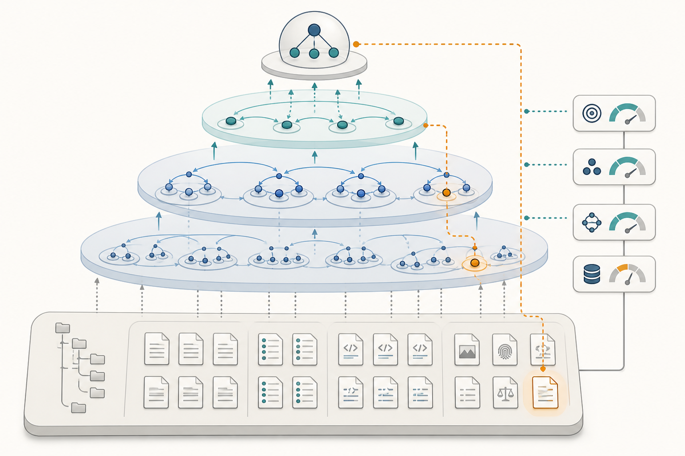

一种面向长期运行本地 Agent 的文件原生参考架构：以统一资源效用驱动稳定闭环的层级编译，并通过证据分层与可逆下钻保留纠错能力。
奖励函数的思想源头并不只在强化学习，也在效用理论、博弈论与行为经济学。
一个生成 agent loop 的系统，不只是制造子代理，而是管理资源、历史、注意力、tick、感知、协作和消亡。
经验沉淀要两条线并行：项目层复盘全局，skill 层提炼可复用动作。
把 AI 时代的能力设计理解成可组合、可迁移的一组函数，而不是孤立的单点函数。
先去以逸待劳，游戏化是那条线，你选择哪种游戏。
如果机器要长期工作，它既要预测资源消耗，也要明白自己和人类之间的边界。
时刻感知本机的运行资源，预测未来的资源消耗，预测方式不仅是定时任务，还有人类本来的习惯。
把多 Agent 协作拆成可观测状态机，核心目标是缩短“想法到验证”的回路。
统一体验稳定性与商业目标，需要先把参数关系转成可验证模型。
把报表自动化做对，策划团队才能把时间投入到策略判断，而不是搬运数字。
优秀作品集应该回答“为什么这么做”，而不只是“做了什么”。